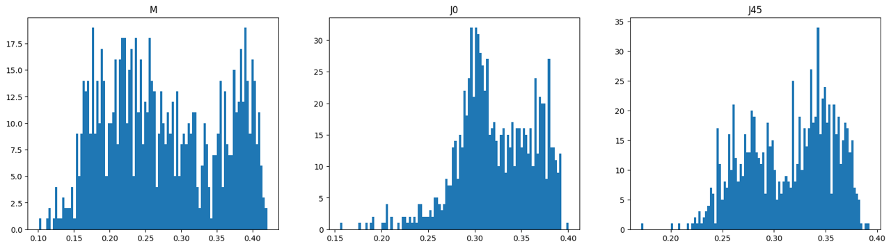

Novel Deep Learning Approaches For Image Analysis
Mathieu Vu
Ph.D. defense - 28th November 2024| Supervisors: | |
| Émilie Chouzenoux | Research Director (Inria, France) |
| Philippe Pinault | R&D Engineer (EssilorLuxottica, France) |
| - | |
| Jury members: | |
| Amel Benazza | Professor (SUP’COM Tunis, Tunisia) |
| Adrian Basarab | Professor (Université de Lyon, France) |
| Benjamin Guedj | Research Director (Inria, UCL, United Kingdom) |
| Céline Hudelot | Professor (CentraleSupélec, France) |
| Ismail Ben Ayed | Professor (École de Technologie Supérieure, Canada) |
Introduction: wisdom of the crowd

British market, 1910
Francis Galton's study of a weight-guessing contest [1]:
- 800 participants
- guesses mean: 1,208 pounds
- ox weight: 1,197 pounds
Introduction: ensemble learning

where $(\forall k \in \{1,\ldots, K\}), x_k \in \mathbb{R}^N$ and $\widetilde{x} \in
\mathbb{R}^N$
Goal üéØ: leverage multiple models to enhance performance on a specific task
Proposed model: NN modelling of an $f$-average

Figure: Structure of a neural network modelling an $f$-average
An optimal ensembling rule based on the average encoded in $(f,f^{-1})$ can
be obtained through supervised learning of matrix $W$.
| Mean | $f(x)$ | $f$ domain | $f^{-1}(x)$ | $f^{-1}$ domain |
|---|---|---|---|---|
| Arithmetic | $Id$ | $[0,+\infty[^N$ | $Id$ | $[0,+\infty[^N$ |
| Geometric | $\big(\ln(\xi_{n}+\epsilon) \big)_{1\le n \le N}$ | $[0,+\infty[^N$ | $\big(\exp(\xi_{n})-\epsilon\big)_{1\le n\le N}$ | $[\ln(\epsilon),+\infty[^N$ |
| Harmonic | $\big(h_{\epsilon}(\xi_{n})\big)_{1\le n \le N}$ | $[0,+\infty[^N$ | $\big(h_{\epsilon}(\xi_{n})\big)_{1\le n \le N}$ | $]-\infty,\epsilon^{-1} - \epsilon]^N$ |
| Quadratic | $x^2$ | $[0,+\infty[^N$ | $\sqrt{x}$ | $[0,+\infty[^N$ |
Table: Examples for $f$ and $f^{-1}$, and definition domains.
For geometric and harmonic means, classical mean formulas are retrieved when $\epsilon \to 0$.
Proposed model: aggregated $f$-averages

Figure: Structure of a neural network aggregating $J$ $f$-averages
| $\forall j \in \{1,\cdots,J\}$, | $\boldsymbol{x_j}$: | $\in \mathbb{R}^{KN}$, vertical concatenation of the inputs $(x_k)_{1 \le k \le K}$ |
| $\boldsymbol{f_j}$: | activation function operating componentwise from $[0, +\infty[^{KN}$ to $\mathbb{R}^{KN}$ | |
| $W_j$: | $\in [0, + \infty[^{N\times KN}$ such that $W1\kern-0.25em\text{l}_{KN} = 1\kern-0.25em\text{l}_{N}$ | |
| $f^{-1}_j$: | inverse activation function operating componentwise from $\mathbb{R}^{N}$ to $[0, +\infty[^{N}$ | |
| $A$: | $\in \mathbb{R}^{N \times NJ}$ |
➡️ This allows to learn the optimal balance between $J$ different average rules, through the
learning of $(W_j)_{1\leq j \leq J}$ and $A$.
Proposed model: stacked aggregated $f$-averages

Figure: Composition of $M$ levels of aggregated $f$-averages. The operation depicted
with the sign $\|$ represents a concatenation.
| $\forall j \in \{1,\cdots,J\}$ and | $\boldsymbol{x_{m,j}}$: | $\in \mathbb{R}^{KN}$, vertical concatenation of the inputs $(x_k)_{1 \le k \le K}$ |
| $\forall m \in \{1,\cdots,M\}$, | $\boldsymbol{f_{m,j}}$: | activation function operating componentwise from $[0, +\infty[^{KN}$ to $\mathbb{R}^{KN}$ |
| $W_{m,j}$: | $\in [0, + \infty[^{N\times KN}$ such that $W1\kern-0.25em\text{l}_{KN} = 1\kern-0.25em\text{l}_{N}$ | |
| $f^{-1}_{m,j}$: | inverse activation function operating componentwise from $\mathbb{R}^{N}$ to $[0, +\infty[^{N}$ | |
| $A$: | $\in \mathbb{R}^{N \times NJ}$ |
FSCIL: motivation

FSCIL use case: AI-powered smart album.
FSCIL: proposed approach - pipeline

Figure: scheme of our proposed approach. Each session is considered
as a few-shot task in order to build a set of models that are then ensembled using our AFA
method.
FSCIL: proposed approach - padding
\[\begin{align*}
x'_i & = \begin{cases}
\frac{1}{2} (\frac{N_k}{N_K} + 1) x_i, & \qquad \; \text{if} \max\limits_{1 \le i \le N_k}x_i \geq t\\
\frac{1}{2} (\frac{N_k}{N_K}) x_i, & \qquad \; \text{otherwise}
\end{cases} \\ ~ \\
p'_i & = \begin{cases}
(1 - \frac{1}{2} (\frac{N_k}{N_K} + 1)) p_i, & \text{if} \max\limits_{1 \le i \le N_k} x_i \ge t\\
(1 - \frac{1}{2} (\frac{N_k}{N_K})) p_i, & \text{otherwise}
\end{cases}
\end{align*}\]
FSCIL: Comparatives results - state of the art

Introduction: context

Introduction: context
- 1 billion people with vision impairment unadressed
- uncorrected refractive errors: a leading cause of vision impairment
Introduction: eye refractive error

| Sphere | Cylinder | Axis |
| $[-13, 10]$ (dioptre) | $[-6, 0]$ (dioptre) | $[0, 180]$ (degree) |
Proposed pipeline: photorefraction principle

The light pattern whose size $s$, shape and orientation depend on:
- the subject's ametropia (eg.myopia),
- the light source position wrt. the camera aperture,
- the measurement distance $d$.
Proposed pipeline: Essilor photorefraction device

Capture process < 400 ms
Proposed pipeline: neural network architecture
| Sphere | Cylinder | Axis | ➡️ | $M$ | $J_0$ | $J_{45}$ |
| $[-13, 10]$ (dioptre) | $[-6, 0]$ (dioptre) | $[0, 180]$ (degree) | $[-14, 10]$ (dioptre) | $[-3, 3]$ (dioptre) | $[-2, 3]$ (dioptre) |

Proposed pipeline: neural network architecture
- regression: from images to a parameter value
- a different set of weights for each target parameter
- lightweight: running on a embedded software
- fast inference for user experience
- without compromising performance
Proposed pipeline: complete pipeline

A smartphone coordinates the pipeline
- is the user interface through an app
- triggers and operates the capture device
- runs the image processing algorithm
- runs the neural network inference
- determines and displays Sphere, Cylinder and Axis
Performance: improvement with ensemble learning

| CNN (mixed) | CNN (real) | $k$-NN | AFA | |
|---|---|---|---|---|
| $M$ | 0.54 | 0.56 | 0.57 | 0.49 |
| $J_0$ | 0.28 | 0.28 | 0.33 | 0.26 |
| $J_{45}$ | 0.21 | 0.25 | 0.24 | 0.19 |
Table: Error standard deviation comparison between weak learners and the ensemble learning method
Robustness: introduction
| $f_{\theta_j}$: | trained neural network model | |
| $x$: | input tensor of 12 images |
Robustness: local Lipschitz constant
Weighted local Lispchitz constant at point $x$ [13]
\[
\sigma_e(x)/\sigma_b
\]

Figure: Histograms of weighted local Lipschitz constants computed with $L_2$ norm on the CNN
Reasonably low values of the local weighted Lipschitz constant are a strong indicator of the robustness of the network [14].
Robustness: improving robustness with a denoiser
The application of a denoiser (pretrained DRUnet [15]) at test time could help with the robustness [16].

Figure: Example of a denoised pupil image
Robustness: controlled Lipschitz constant training
Using the deel-lip library [17],

Error standard deviation of a model trained with deel-lip in function of $K$
The lower the Lipschitz constant, the greater the constraints.
➡️ balance robustness and performance
➡️ balance robustness and performance
Robustness: controlled Lipschitz constant training
Histograms of weighted local Lipschitz constants computed with $L_2$ norm on the standard CNN

Histograms of weighted local Lipschitz constants computed with $L_2$ norm on the 4-LCNN
Part II - Conclusion
| Design a screening tool | ||
| ➡️ | smartphone application | |
| ➡️ | low-priced device | |
| ➡️ | outperforms competition | |
| ➡️ | controllable Lipschitz values |